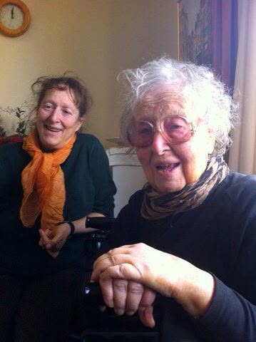

Her Story
Sonia was born on May 18, 1926, in Poland. Before the war, she lived a simple life with her parents and sister in a rooftop apartment in Łódź. Her father was a hardworking carpenter who provided for his family. Though their life was modest, it was filled with the familiar rhythms of family, work, and community. Sonia was just thirteen years old when Germany invaded Poland in September 1939, forever changing the course of her life.
Like thousands of other Jewish families, Sonia and her family were forced into the Łódź Ghetto, where she would spend nearly five years of her adolescence under unimaginable conditions.
The Łódź Ghetto was one of the largest and longest-lasting ghettos established by the Nazis during the Holocaust. Its inhabitants endured extreme hunger, overcrowding, disease, forced labor, and the constant threat of deportation. Sonia came of age in this world, where survival depended on resilience, resourcefulness, and extraordinary courage.
In 1942, when Sonia was sixteen, the Nazis carried out some of their most devastating deportations. Thousands of children, elderly people, and others deemed unable to work were taken away, most never to return. By the summer of 1944, the Germans began the final liquidation of the ghetto, deporting tens of thousands of its remaining inhabitants to Auschwitz and other killing centers.
Sonia was among a small group of Jewish prisoners left behind to dismantle the ghetto and sort through the belongings of those who had been deported. As the Soviet army approached in January 1945, the Nazis planned to murder the remaining prisoners. Many went into hiding, narrowly escaping death. When Soviet forces liberated Łódź on January 19, 1945, only approximately 877 Jewish people remained alive within the former ghetto. Sonia, just eighteen years old, was among them.
Although Sonia survived the Holocaust, she rarely spoke of what she had endured. The experiences of those years remained largely unspoken, but their impact was woven into the life she built afterward. Both of her parents also survived the war, an extraordinary outcome amid the devastating loss of European Jewish life.
Sonia went on to build a family and a future, making sacrifices that would open doors for the generations that followed. Her determination and hard work helped provide her children and grandchildren with opportunities, security, and an education that valued the whole human being.
Her Legacy
Today, her legacy lives on not only through her family, but through the lives they touch. The dedication of the Sapta Sonia Therapeutic Equestrian Corral at Otto Specht School honors her strength, her sacrifices, and the possibilities she helped create for future generations.

The program dedicated in her name embodies something deeply connected to her story: the importance of providing children with a place where they feel safe, valued, and cared for.
Even after unimaginable loss, it is possible to build a future rooted in love, hope, and opportunity.
Sapta Sonia's life reminds us of this. Her legacy continues in the generations that follow and in the children whose lives will be enriched in her name.